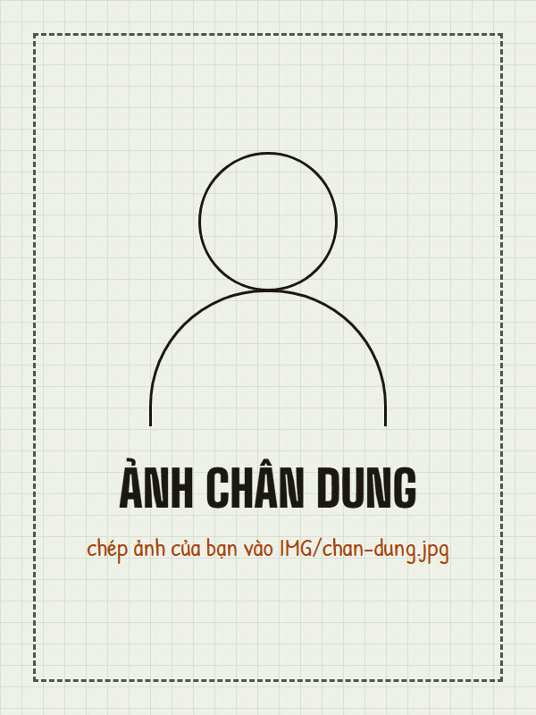

Người ghi cuốn sổ này
Thềm Café là một quán hư cấu, được dựng lên cho bài tập cuối môn Thiết kế Website. Trang này là tờ ký tên cuối sổ: ai làm, làm những phần nào, và liên hệ ra sao.

ra lò · 12:30 · 205°C

Lê Thị Bảo Trân
Mình là sinh viên Trường Cao Đẳng Kinh Tế Đối Ngoại. Mình chọn chủ đề quán cà phê vì thích cảm giác ngồi quầy nhìn barista pha, và muốn thử làm một website mà mỗi trang đều kể cùng một câu chuyện: hạt cà phê đi từ lúc còn xanh tới khi thành một ly trên bàn.
- Họ và tên
- Lê Thị Bảo Trân
- Ngày sinh
- 09/12/2007
- MSSV
- 2503538
- Trường
- Cao Đẳng Kinh Tế Đối Ngoại
- Môn học
- Thiết kế Website · bài tập cuối môn (làm cá nhân)
- Vai trò
-
- Lên ý tưởng quán và câu chuyện "nhật ký mẻ rang"
- Thiết kế giao diện, màu sắc và bố cục 5 trang
- Viết toàn bộ mã HTML và CSS
- Soạn nội dung, chọn và tối ưu hình ảnh
- Điện thoại
- 0942 327 409
- ltbaotran94@gmail.com